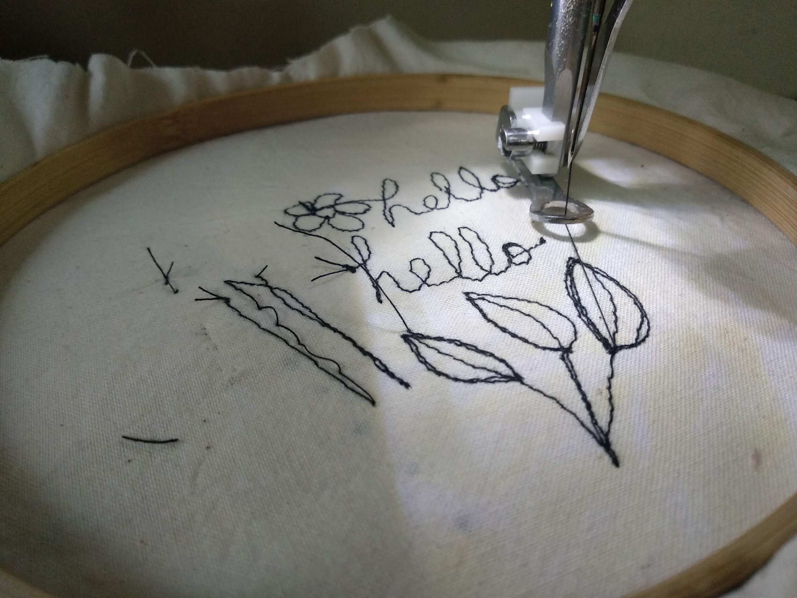
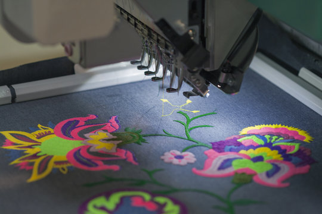

Embroidery
Machine embroidery revolutionizes the age-old art of embroidery by blending traditional craftsmanship with modern technology. Utilizing computerized machines and precision engineering, machine embroidery offers a seamless and efficient method of stitching intricate designs onto fabric. From delicate florals to intricate lacework, machine embroidery enables creators to bring their visions to life with speed and precision.

